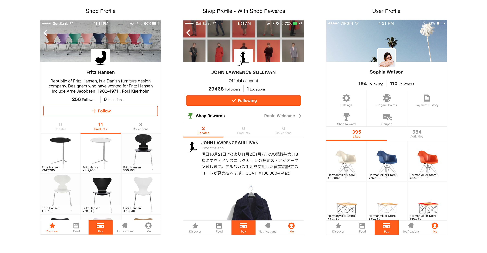

Designing the new Origami profiles
Initially, Origami profiles were mostly used as the showcase of their curated product and news updates for both businesses and users. Therefore, they were essentially designed to focus on these elements. With the introduction of Shop reward program and Coupons, we set out to update the design in order to support greater expression of their brand, personality, and collection of products as well as rewards and coupons.
Collaboration:
I was the sole designer on this project with 1 engineer with regular catch up meetings once a week for the implementation phase. During the design process, I held regular feedback session with the product team where we brainstormed and critiqued which helped me improve my design.
Final outcome:

Old version of profile
Ttext